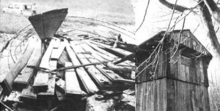

Have you ever tackled a salvage operation on a tumbledown barn? If so, you know only too well just how much time and work go into such an undertaking (that is, if you expect to rescue anything more than splintered kindling). Even post-salvage cleanup is often a major task in cases where burning isn't feasible or a permit can't be obtained. If you and a partner managed to get the sagging structure down to a clean foundation within a week, you made excellent time . . . and, no doubt, expended a tremendous amount of energy. In fact, the ordeal may have left you wondering whether you shouldn't have purchased rough-cut 1-inch boards from a sawmill and avoided the hassle of extensive second-story ladderwork and careful removal of nails . . . all topped off with several trips to the dump.
A much better-and often overlooked-alternative (at least here in the Northeast) is to forget the barn and go for the wooden silo which may be attached to it. The old-time feed storage tank was (and still is) simply a large cylinder made of boards set on end, fitted together at the edges, and bound with metal hoops. The resulting structure is usually 11 to 12 feet in diameter and 24 to 28 feet high. It may, in other words, have a surface area of 750 to 1,000 square feet . . . which breaks down to approximately 1,400 to 1,900 board feet of weathered 2 X 5 tongue-and-groove lumber.
The salvaged boards may vary in length from 4 to 20 feet-depending on the construction of the particular silo-with 8-and 16-footers very common. Nicer still, the wood-often fir or pine-is multi-purpose. Silo lumber is currently serving as roof, floor, and walls of my house, and each rafter of my 16' X 32' tool and animal shed is made of two staves spiked together.
The silo, incidentally, may also have a wooden roof . . . which will yield another 200 or so board feet of 5/8-inch-thick planks. The segments of roofing are trapezoidal and make very effective wainscoting when alternately reversed to form rectangles.
You might expect such a rich source of lumber to be expensive and hard to come by . . . but here in upstate New York, anyway, that's not at all the case. During the 1950's farmers began to buy concrete silos, and more recently they've taken to storing feed in huge metal tanks. Consequently, many of the smaller wooden silos have fallen into disuse and are available for salvage. In this neck of the woods you can generally find such a deal by advertising in the local paper or inquiring of neighbors.
Once you've tracked down a likely silo, you can either make its owner a flat offer or suggest a price per usable salvaged foot of lumber. The latter approach may be to your advantage, because the bottom two feet of the old vertical storage units are often rotten and worthless and-in any case-a few staves will probably break when the structure hits the ground. (Even broken lengths, though, can generally be put to some use.)
Before you offer-or agree to-a lump sum, test several staves for solidity with a hunting knife. Exterior appearance can be deceptive and dry rot may lurk within. Also notice the state of the roof-intact? missing? badly damaged?-since vertical tongue-and-groove boards will deteriorate rapidly when exposed to rain. And be sure to find out whether the walls are nailed together. I once took down a silo which was toe nailed with 4-inch spikes, and the labor involved almost offset the fact that I was getting the wood for free. If you have a choice, avoid any such undertaking.
The final price you and the owner arrive at will vary with the seller's appreciation for the versatility of the wood. The figure might range from $25 to $200, with $50 to $100 about average.
I've talked with several old-timers about taking down silos, and have used their techniques on six different occasions with excellent results and very little breakage. Now I'd like to pass on what I've learned in the hope that other homesteaders will tap this source of low-cost lumber.
If you work with a partner-a good plan-the pair of you will need the following tools:
2 electrician's belts (handy to hold tools when you're on a ladder or otherwise off the ground)
2 safety belts
2 hard hats
28-foot ladder
2 small wrecking bars
2 framing hammers
Liquid Wrench
12-inch crescent wrench
Hacksaw Oxyacetylene torch
1/2" X 50' cable with 2 heavy-duty hooks
Flatbed or pickup truck (a 4-wheel-drive pickup is ideal)
Once you're properly equipped, you'll be ready to begin: First of all, a wooden silo is usually attached to a barn by 2 X 4's and 1-inch boards which have to be loosened with a small wrecking bar and/or heavy framing hammer. It's generally easiest to do this from within, by ascending the steps of the silo door and working from the top down. On your first trip up, fasten one end of the 1/2" X 50' cable firmly to the top hoop . . . and while you're at it, remove the doors as you descend. You'll probably have to reach any guy wires that may be fastened to the barn by climbing a ladder to the point where they're attached (usually by turnbuckles). Also check for lightning rod ground cables affixed to the main building.
By this time the silo shaft framework should be free of the barn, and you can turn your attention to relaxing the grip of the metal hoops. These are usually held by 1- to 1-1/4-inch nuts. Start from the top, apply Liquid Wrench to the rusted fastenings, and loosen them until just the ends of the threads are holding. Or entirely remove all hoops except those at the top and bottom, and loosen the remaining pair at least 1 inch.
When you've finished, hook the free end of the cable to the truck and undo any anchor bolts at the base of the silo. One person should then stand at a safe distance to document the climax with a camera, while the other drives slowly forward to (first) take the slack out of the cable and (second) then continue on in first gear until the whole vertical wooden tank is horizontal. Usually a couple of boards break and release the tension, allowing the rest to collapse in a heap.
All that remains is to sort the staves, pile them onto the truck, and haul them away. The unloaded wood should be stickered with lath every 3 or 4 inches for ventilation and to avoid warping.
The boards of one silo make two full loads for my 3/4-ton Chevy pickup, with a third run needed to collect the doors, roof, hoops, and whatnot Unless you have a vehicle-probably a 1-1/2-ton flatbed truck with racks-that can haul everything in one trip, you'll be wise to restrict your salvage operations to within a 50-mile radius of your own building site.
OK, what do you have to show for a minimal investment plus one day's effort? First of all, 750 to 1,000 square feet of 2 X 5 tongue-and groove boards . . . and possibly an additional 200 feet of 5-foot-long trapezodial 5/8-inch roof sections. Then there are a dozen funky silo doors, which can be taken apart or used as is for a very rustic ladder to a loft area. (Any leftover iron steps make good towel racks or safety bars for a shower.) And don't forget all those hoops of 1/2- to 3/4-inch metal. If you have a cutting torch, you can slice off the threaded ends to make 40 anchor bolts of any desired length and divide the remaining 300-odd feet into convenient sizes to serve as reinforcing rod. That's quite a pile of building materials . . . especially when you consider that you got it all with no tedious nail-pulling or the hauling of loads of scrap to the dump.
If you live in silo country, you're fortunate indeed. Those sturdy old wooden tanks-which have outlived their day as storage units-are a valuable rural resource and a real blessing to the homesteader in a time of soaring lumber costs.
|
LEFT: The fallen unit collapse into a heap of loose boards. RIGHT: Tongue-and-grooved silo staves are highly versatile. |
 |
|